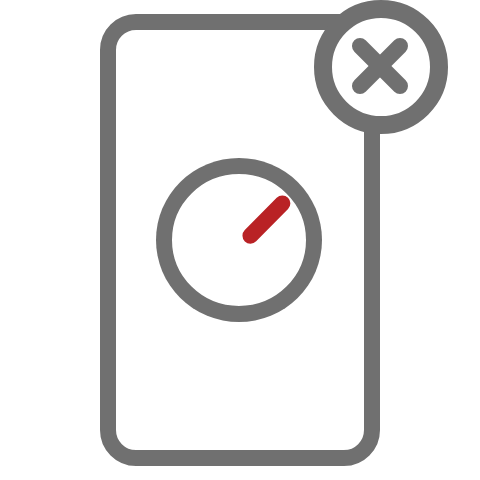
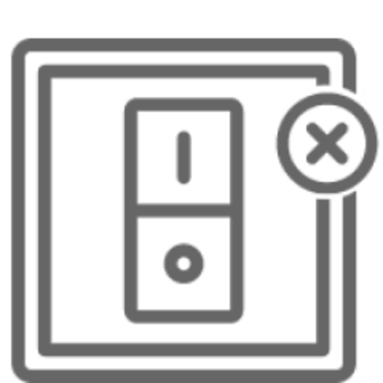
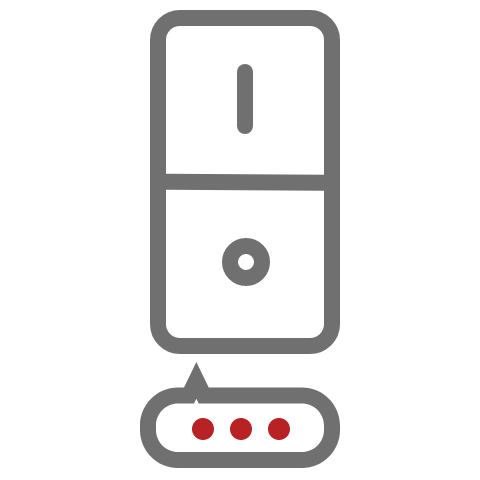
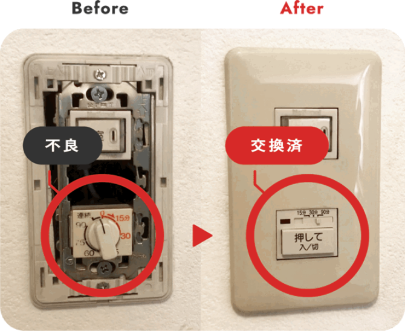
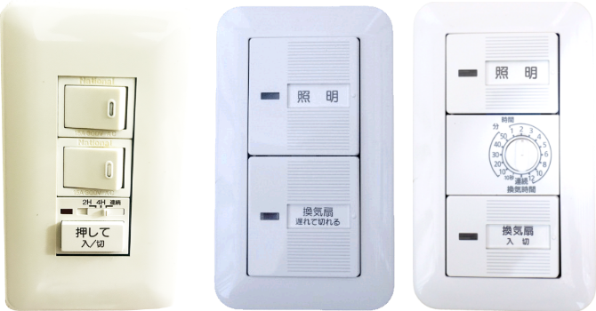
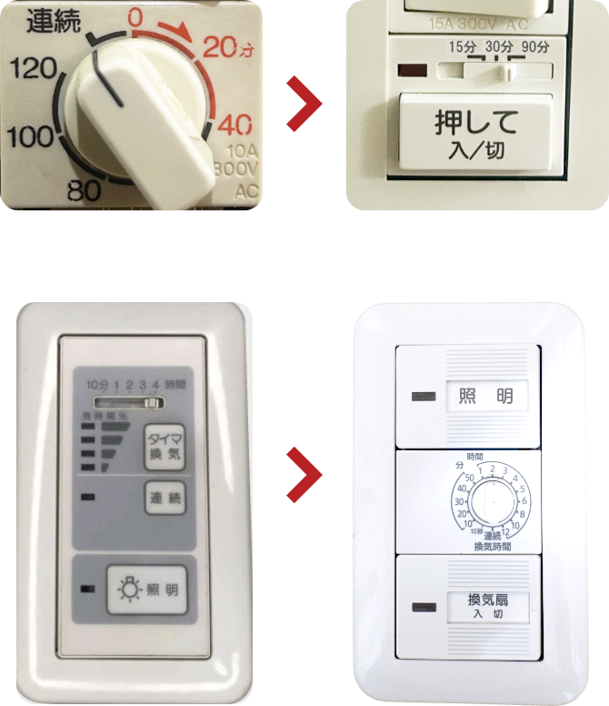
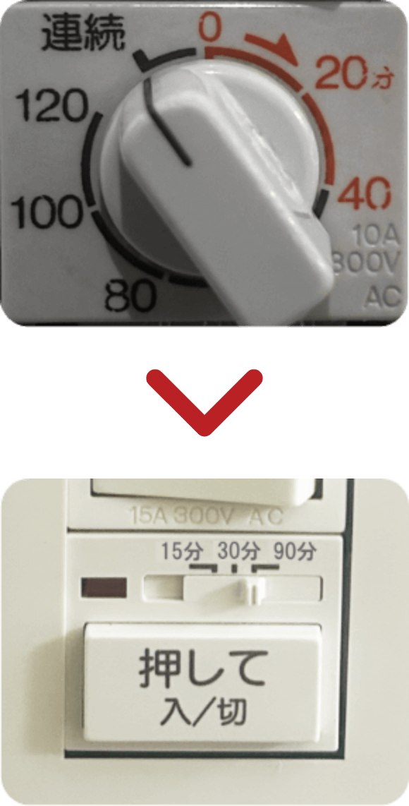
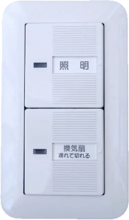
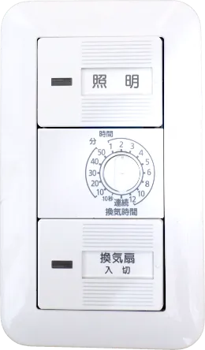
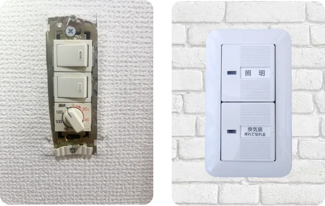

ジモデン登録の
電気工事店なら
換気扇タイマー交換費用
1ヶ所
8,800円(税込)

スイッチ
部品代
Point! プロが解説
換気扇タイマースイッチ 交換費用と業者選びのポイント


換気扇タイマースイッチ故障でお困りですか？
-
 換気扇のタイマースイッチの
ゼンマイが壊れた！ -
 入り切りできない…
-
 ボタンが反応しない…
換気扇タイマースイッチが故障した時に知っておきたい
工事費用の相場や適切な業者の探し方
ぼったくりを防ぐ方法を
電気工事のプロが解説します。
- 換気タイマースイッチの交換費用は？
- 適切な業者の探し方
- 換気扇の故障かも？


換気扇タイマースイッチ交換費用と業者選びのポイント
Index
01 換気扇タイマースイッチ交換とはどんな工事？
-
1 スイッチを新品へ取替える工事
 - ゼンマイの故障、タイマースイッチ破損で使えなくなったスイッチを新品へ交換する工事
換気扇のスイッチが入切タイプの場合はこちらのページ【電気スイッチの交換費用】を参考にしてください。 - 比較的簡単な電気工事
- ヒアリングや画像送付でスイッチの仕様を確認→オンライン見積り可
プロが解説
このシンプルな工事で『現地を確認しないと値段は出せない』
『5,000円～です』などと言う業者は避けたほうが無難 - ゼンマイの故障、タイマースイッチ破損で使えなくなったスイッチを新品へ交換する工事
-
2 換気扇タイマースイッチの種類は数種類ある
 - 主にトイレ、浴室用があり、用途により換気扇が停止するまでの時間が異なる。浴室は長く、トイレは短い
- パナソニック製以外では納期がかかり、工事まで数日を要する場合も
プロが解説
東芝・神保などのメーカーは納期がかかることもあり、使用感は変わりますが、故障した箇所を全てパナソニックに交換することは可能
-
3 生産終了のスイッチもある
 - ゼンマイ式や押しボタン式などは生産終了しています。使用感が違いますが新品へ交換可能
プロが解説
換気扇タイマースイッチの部材代は4,400円～6,000円程。
02 電気工事業者に依頼した際の換気扇タイマースイッチの交換費用はどれくらい？スイッチ部品代は？
一般的な換気扇タイマースイッチ交換工事費用総額の適正価格
※住宅や店舗・事務所で使用されている一般的なものスイッチ1ヶ所
6,600円~9,900円
(税込)
（工事費の総額。業者により基本料、
出張費などの項目があります。）
タイマースイッチ部品代
（スイッチ部材は4,400円～6,000円程
※タイマーや人感センサー付きを除く）
駐車場代などの
追加費用
（コインパーキング代をどちらが負担するかは業者により異なります。
また、片道20km以上など遠方の場合は交通費がかかる可能性があります）
プロが解説
換気扇タイマースイッチ交換を業者へ依頼する場合は、事前にメールやLINEでの問い合わせに対応している業者へ画像を送り、見積りを出してもらうことをおすすめします。
スイッチ部品代はいくらくらい？
換気扇タイマースイッチの種類はかなり多くありますが、
最も多く使用されている部材は主に４種類となります。
部材代は4,400円〜6,000円程となります。
換気タイマースイッチ一覧
-
パナソニック WN5293K
トイレ換気扇に適しています 15分・30分・90分のタイマー機能
スイッチ部品代は4,400円程
 -
パナソニック WN5294K
浴室換気扇に適しています 2時間・4時間・連続のタイマー機能
スイッチ部品代は4,400円程
-
パナソニック WTC54816W
トイレ換気扇に適しています 10秒～30分のタイマー機能
スイッチ部品代は5,000円程
 -
パナソニック WTC53916W
浴室換気扇に適しています 10秒～12時間のタイマー機能
スイッチ部品代は6,000円程

03 どこへ・どのように頼めばよいのか？
-
 どこに頼めばいい？
どこに頼めばいい？ -
 いくらくらいかかる？
いくらくらいかかる？ -
 高額請求されていない？
高額請求されていない？
第一種電気工事士が解説
実際に換気扇タイマースイッチ交換をしたい場合にどこに頼めば良いのでしょうか。そのような疑問を解消します。
電気工事業者
Expert大規模施設や住宅などの電気工事を行う事業者。 事務所や倉庫で営業しているため、近くで営業していてもほとんどの方は気付かないと思いますが、精度に加えスピードを求められる仕事をこなしているので本物のプロと言えますし、迅速に動いてもらえるでしょう。
- 相場
- 交換費用１ヵ所6,600円～9,900円＋スイッチ部品代
- 依頼方法
- 電気工事業者のホームページにはスイッチ交換費用を明確に記載していない場合が多いので、問い合わせページから画像を添付して工事費用を確認する。
街の電気屋
Electrianパナソニックのお店やアトムなどの家電販売と小規模電気工事を行うお店です。街の電気屋はしっかりと料金表があり、高額請求されることはありません。ただし、見積りのために来てもらうだけで出張費や見積料を請求される可能性があります。また、電気スイッチ交換費用は相場より高めとなることが多いようです。それでも高額請求がない、対応が早い点でオススメです。
- 相場
- 交換費用１ヵ所6,600円～9,900円＋スイッチ部品代
- 依頼方法
- 現地確認（見積り）をしてもらうだけで費用が発生する場合が多いため、不具合のあるスイッチを撮影してお店へ行き確認する。
インターネット集客業者
Internet
くらしのマーケットやミツモアなどの集客業者です。実際に工事を行うのは契約している電気工事店となります。また、クチコミが掲載されているので安心感があります。
インターネット集客業者を通すと電気工事店に手数料が発生しますので、電気スイッチ交換費用は割高となるでしょう。また、集客業者の中には、3000円～などお値打ち感を打ち出して、実際には倍以上の費用を請求する業者もありますので注意して下さい。
- 相場
- 交換費用１ヵ所8,800円～14,000円＋スイッチ部品代
- 依頼方法
- 金額が明確な【くらしのマーケット】又は、【ミツモア】から依頼する。その際、『現地確認後の見積り』としか言わずに目安の金額を教えてくれない業者や、『〇〇円～です』としか言わずに目安を教えてくれない業者は避けた方がよいでしょう。
04 換気扇本体の故障かも？
換気扇が故障していませんか？
換気扇タイマースイッチを【入】にしても
- 換気扇が動かない…
- スイッチが故障した?
換気扇タイマースイッチを【入】にしても換気扇が動かないとスイッチが故障したと思うかもしれませんが、実際には換気扇が故障していることもあります。
換気扇が壊れる時はモーターの異音が発生していることが多く、そのまま使っていると耐えきれないほどの音が出たり、動かなくなることがあります。
大きな異音が発生している場合は換気扇の故障を疑いましょう。
換気扇タイマースイッチの故障は、ダイヤルが空回りする、スイッチを押した感触がおかしい、押してもカチッと鳴る音が弱いなど、感覚でおかしいと判断できることが多いでしょう。
換気扇からの異音がなく、スイッチの感触も異常がなければ、あとは電気工事業者に調査をしてもらわないと解決できません。迷ったらまずは業者へ見積りをとりましょう。
05 換気扇タイマースイッチ交換を業者へ依頼する際のまとめ
-
01
換気扇タイマースイッチ
Price
交換費用の適正価格１ヵ所の工事費6,600円～9,900円＋スイッチ部品代
- ※工事費とは出張費や基本料など、部材費以外の全てを含んだ値段
- ※部材費は一般的なスイッチの場合4,400円～6,000円程
- ※業者により駐車代が必要なことがあります。
- ※スイッチ部材は業者に用意してもらいましょう。
-
02
どこへ工事を頼めるのか？
To Whom-
1 地元の電気工事業者
- 地元の電気工事業者を【〇〇市 電気工事業者】などで検索
- 問い合わせページから画像を送り、工事費用を確認
※電気工事業者のホームページは料金の記載がない場合が多いので、問い合わせしづらい可能性があります。
-
2 街の電気屋
- パナソニックのお店などの街の電気屋さん
- 工事費用は少し高めだが、料金表があるので安心
- 現地確認→見積りだけで調査料などが発生するので、故障したスイッチの画像を持ってお店へ行き確認するのが良い。

-
3 インターネット集客業者
- 料金が明瞭なくらしのマーケット、アイミツが安心
- 下記を記載している、または回答する業者には要注意！
- 最短〇分で到着
- 最安値
- 3,300円～など相場より安い金額

-
-
03
どのように依頼をすれば
How to
よいのか？メールやLINEでの問い合わせに対応している業者へは、
下記があれば回答できます。 -
・換気扇タイマースイッチの画像
（かなり近くから1枚） -
・換気扇の用途
（トイレ、浴室用など）
-
・換気扇タイマースイッチの画像

電気工事施行管理20年の経験
保有資格：第一種電気工事士、１級電気施行管理技士。
電気工事の経験20年、独立後は自力で作成したホームページ集客のみで法人設立後も3年間黒字を維持。